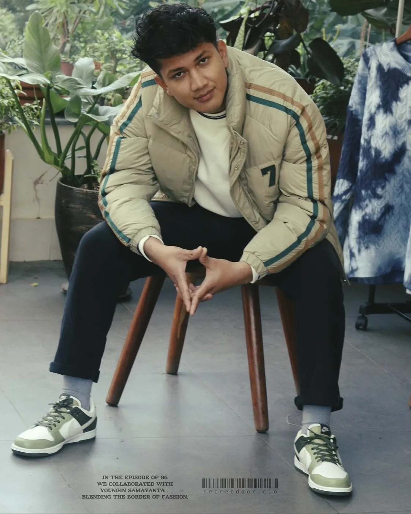

Software engineering as a way to think.
I study systems, data, interfaces, and implementation tradeoffs through software engineering. MERN and Flutter are part of the toolkit, but the deeper skill is turning ambiguity into structure.
About
I am Samayanta Raj Ghimire, a Software Engineering student and Business Development Associate from Lalitpur, Nepal. My edge is the bridge: I can think through code, communication, customer growth, and the operating system a business actually needs.

Calm is not slow. Calm is the ability to see the system clearly.
I am drawn to work where technical decisions influence business outcomes: the CRM that keeps sales honest, the interface that reduces confusion, the deployment that makes an idea reliable, and the story that makes people care.
Journey
The mix is intentional. Engineering teaches structure. Business development teaches urgency. Creative work teaches taste, presence, and emotional pacing.
I study systems, data, interfaces, and implementation tradeoffs through software engineering. MERN and Flutter are part of the toolkit, but the deeper skill is turning ambiguity into structure.
Working with outreach, lead generation, CRM workflows, and international communication keeps the work grounded in business pressure: trust, timing, clarity, follow-up, and conversion.
Music, guitar, flute, basketball, science fiction, interface design, and film all shape how I see rhythm. I care about the emotional experience of technology, not only its functionality.
I am experimenting with AI as a practical layer for research, communication, workflow design, and smarter execution. The goal is not novelty. It is better judgment at higher speed.
Mindset
A beautiful product that ignores the operating reality will still create friction. I start with the business model, the workflow, and the user pressure.
The most valuable system often feels invisible: clearer handoffs, fewer repetitive tasks, better data, and less emotional overhead for the team.
I like cinematic ideas, but I respect performance, accessibility, and clarity. Motion should support meaning, not compete with it.